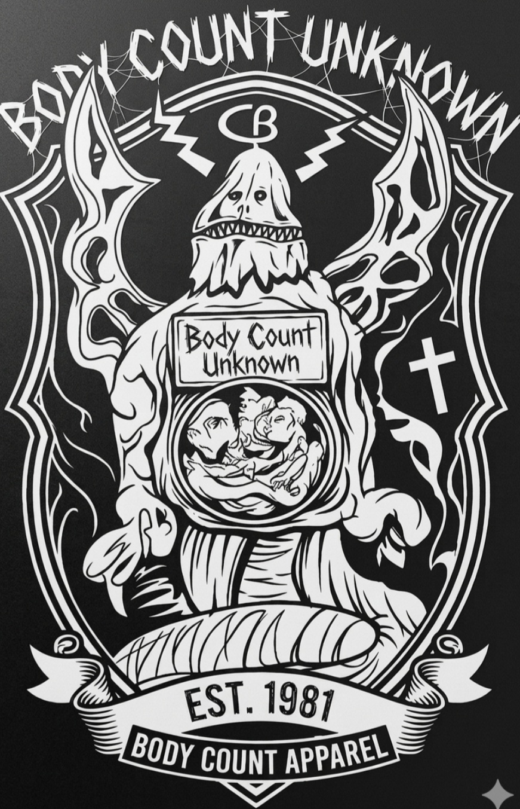
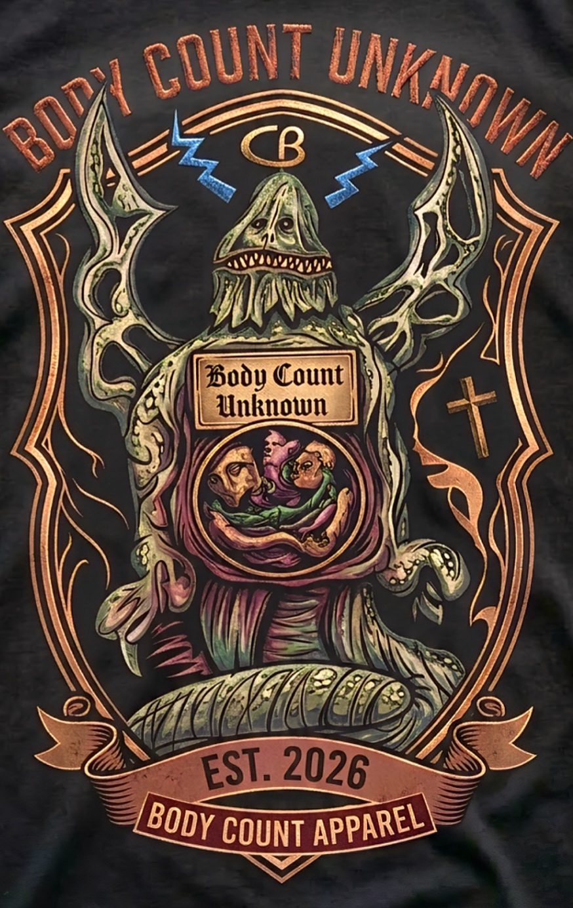
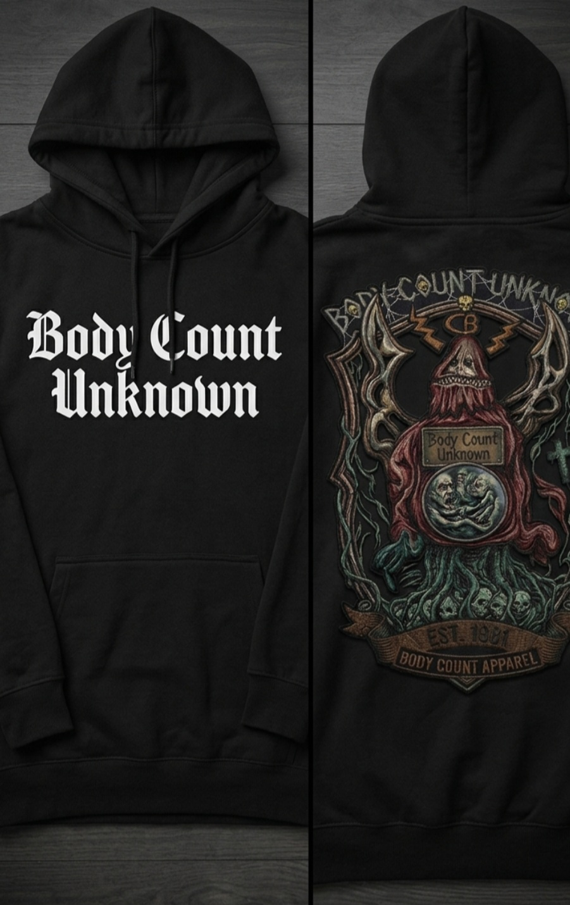
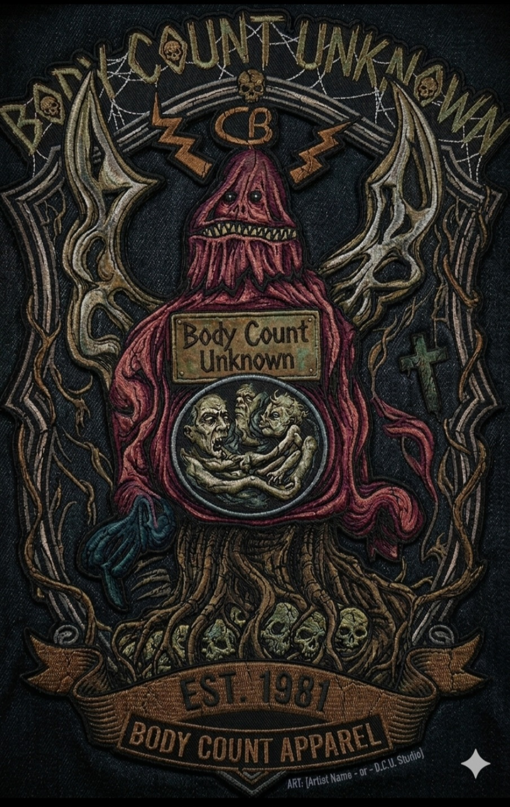

Body Count Unknown
Substructural Network // Specimen_01
System Manifest
Neural Nodes: 0
Structural Integrity: 100%
Core Frequency: Sub-Hz
Structural Integrity: 100%
Core Frequency: Sub-Hz
// Disrupting the template. A living, volatile landscape where the boundary between organic flesh and synthetic structure fractures.
Visual Records



